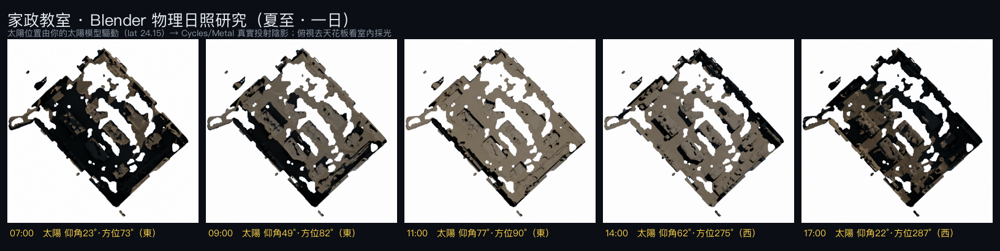

把 LiDAR 公尺級 3DGS 場景接進 Blender：物理級日照模擬、電影級運鏡、與真高斯匯入 Blender 的管線實測（2026/06）。
用太陽位置物理模型（赤緯＋時差＋時角，lat 24.15）驅動 Blender 太陽燈，對 LiDAR 網格渲染真實投射陰影，重現教室一天的採光變化。比網頁版「CSS 假調色」多了真實太陽角度與陰影。

照片級 3DGS 自動繞行運鏡（繞行＋升降＋半徑脈動）環視整間工坊，內建「錄製一圈」一鍵輸出 WebM 影片，免裝軟體、適合簡報。由 PlayCanvas 即時渲染真高斯。
🎬 開啟電影級運鏡 →指令 npx -y @playcanvas/splat-transform 壓縮.ply 標準.ply 無損還原出 x,y,z／f_dc／opacity／rot／scale，再用 KIRI「3DGS Render」外掛匯入。1.11M 高斯成功進 Blender。
為了「真 splat 也能重光」，在 Colab 用 gsplat 官方 trainer 開深度損失＋保留 SH 重訓家政場景。管線跑通、去霧成功、SH 練回來——但 1200px 輸入下品質贏不過 8K 版。全程踩坑與誠實成效判讀都記成一頁：
🧪 看深度正則重訓實驗紀錄 →Blender 5.1.2 · Cycles/Metal（Apple M4 Max，無 CUDA）· KIRI 3DGS Render v5.0 · @playcanvas/splat-transform · PlayCanvas 2.10（網頁渲染）。完整操作說明與 .blend 場景隨交付提供。